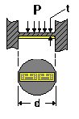

Applied Pressure, P (0.000 to 100,000 psi [0 to 689 GPa])
Applied Pressure, P (0.000 to 100,000 psi [0 to 689 GPa])Design Verification command
Design Considerations
Calculations are based on the following assumptions:
Uniform diaphragm thickness.
Small deflections.
Infinitely rigid clamping around the diaphragm periphery.
Perfectly elastic behavior.
Negligible stiffening and mass effects due to the presence of the strain gage on the diaphragm.
To the degree that the actual transducer fails to satisfy all the above assumptions, the calculations will be inaccurate. Because of this, the calculations should be used only in the initial stages of transducer development to detrermine the approximate proportions of the transducer.
For more details, see Measurements Group Tech Note TN-510.

Inputs (Allowed Range)
Applied Pressure, P (0.000 to 100,000 psi [0 to 689 GPa])
Fluid or gas pressure uniformly distrubuted over the diaphragm surface.
Thickness, t (0.010 to 1.000 in [0.254 to 25.4 mm])
Measured.
Diameter, d (0.182 to 10 in [4.623 to 254 mm])
Measured.
Poisson's ratio (0.1 to 0.4)
For the material from which the shaft is constructed.
Modulus of Elasticity (5E+6 to +50E+6 psi[34.5 to 345 GPa])
For the material from which the diaphragm is constructed.
Calculated Values (Units)
 Pressing the COMPUTE BUTTON after entering the variables (within their acceptable ranges) calculates the following three output values:
Pressing the COMPUTE BUTTON after entering the variables (within their acceptable ranges) calculates the following three output values:
 Maximum Radial Strain (microstrain)
Maximum Radial Strain (microstrain)
Calculated at the diaphragm edge.
Maximum Tangential Strain (microstrain)
Calculated at the diaphragm center.
Span at Applied Pressure (mV/V)
Bridge output at applied pressure is not calculated because of the large variety of choices for gage grid length and placement locations on the diaphragm. To obtain an approximate estimate of full-bridge output, it is possible to use the strain diagram illustration provided. By superimposing the gage length and placement locations on this diagram, one can calculate the approximate average strain values and bridge output.